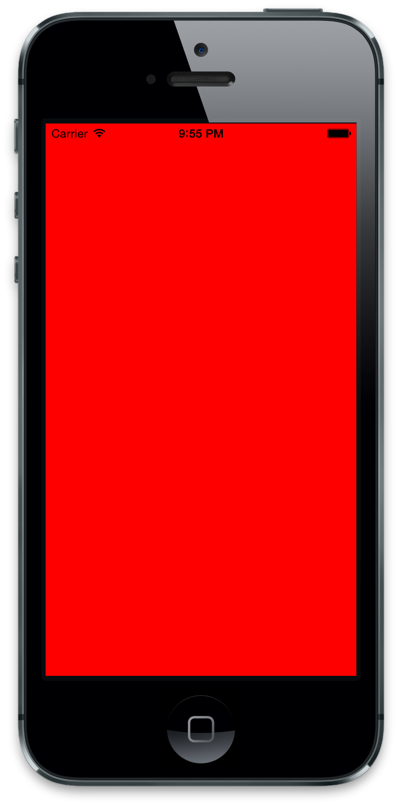
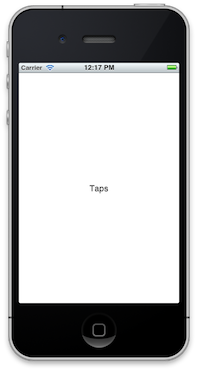

Controllers
We've done some work with views, but they are but one leg of the "Model-View-Controller" paradigm the iOS SDK uses. That sounds really fancy, but it's actually pretty simple.
The idea is that in your code you should have three types of classes: views (which yup, you've already seen), models (which represent and handle data), and....controllers.
So, what are controllers? They're objects which act as a "layer" between models and views, interpreting events from the user to change the models and update the views in response. In a perfectly coded world, when you tap a button the controller intercepts that event, updates a property of the data, and changes the view to reflect the new data.
That sounds kind of "big picture", but there are some really practical reasons for controllers:
- View reuse. Let's say we have a
PostViewwhich displays all the information about aPost(its content, author, "Likes", etc). We want to use this view on a couple of different screens, such as a main feed and a user's profile feed. To stay reusable, thePostViewshouldn't deal with how it gets the information; instead, its controller should take care of that and then pass the processed data on to the view. - Presentation management. Sometimes we want a view to take up the entire screen, other times we want the same thing to appear in a modal box (think iPad vs iPhone). It doesn't make sense to write two identical view classes that differ only in presentation style, so we use the controllers to resize and animate our views accordingly.
There's nothing technically stopping you from doing those things inside models and views, but it makes your code much more robust and easier to manage if you embrace MVC.
In iOS-land, controllers are UIViewControllers. They come with one view property and methods for dealing with things like the view "lifecycle" and handling orientation changes. Don't fret, we'll get to the lifecycle business soon enough.
So now that we know what a controller is and what it should do, what shouldn't it do?
- Directly query or save data. It's tempting to send a bunch of HTTP requests in a controller, but those are best left to your models.
- Complex view layouts. If you're directly adding subviews more then one level "deep" to your controller's
view, you should rewrite your views to do it themselves. As a good rule of thumb, the onlyaddSubviewyou should see in your controller isself.view.addSubview.
OK that's enough exposition, time for the Michael Bay action sequences.
Everything Is Under Controllers
Create the ./app/controllers directory (mkdir ./app/controllers) and add a TapController.rb file inside. Let's start to define our controller like so:
class TapController < UIViewController
def viewDidLoad
super
self.view.backgroundColor = UIColor.redColor
end
end
viewDidLoad is one of those "lifecycle" methods of UIViewController, which is called after self.view has been created and is ready for subviews to be added. For now, we just make its background color red and call it a day.
You absolutely, must, without question call super in viewDidLoad, or else bad things will happen. Got it? Cool.
Now, go back to your AppDelegate and remove our old UIView code. We just need to add one line so it looks like this:
class AppDelegate
def application(application, didFinishLaunchingWithOptions:launchOptions)
@window = UIWindow.alloc.initWithFrame(UIScreen.mainScreen.bounds)
@window.makeKeyAndVisible
# This is our new line!
@window.rootViewController = TapController.alloc.initWithNibName(nil, bundle: nil)
true
end
end
See the rootViewController= call? The window will take the given UIViewController and adjust its view's size to fit the window. This is the better way of setting up your window (as opposed to window.addSubview everywhere).
The other new part of that line is initWithNibName:bundle:. Typically, this is used to load a controller from a NIB file. NIBs are created using Xcode's Interface Builder as a way of visually constructing your view. Since we aren't using Interface Builder for our controller, we can safely pass nil for both arguments.
initWithNibName:bundle: is also the "designated initializer" of UIViewControllers. Whenever you want to create a controller, you must call this method at some point, especially in any customized initializer methods.
Since that's out of the way, rake and check it out. You should see something like this:

Big things have small beginnings. Let's make one small change to our controller:
def viewDidLoad
super
self.view.backgroundColor = UIColor.whiteColor
@label = UILabel.alloc.initWithFrame(CGRectZero)
@label.text = "Taps"
@label.sizeToFit
@label.center = CGPointMake(self.view.frame.size.width / 2, self.view.frame.size.height / 2)
self.view.addSubview @label
end
A wild UILabel appeared! UILabels are views meant for displaying static text with their text property. We create one, set its text to "Taps", and add it as a subview.
We use the CGRectZero frame when we initialize it because we don't know the exact dimensions of the text on the screen yet; however, when we call sizeToFit the label resizes itself to perfectly fit its contents. Then we use the handy center property to center it in our controller's view.
rake again for a much pleasant-looking app. It doesn't really do...anything right now, but in the next chapter we'll make it do...stuff.

Wrap Up
What did we learn this time?
- The iOS SDK uses the Model-View-Controller paradigm.
UIViewControllermakes up the controller part of that, and it should be subclassed for customization.- Use
viewDidLoadwhen to setup your controller and don't forget to call *super. UIWindows have arootViewControllerproperty for displaying controllers.
Pole vault up to the next chapter and play with Container Controllers!